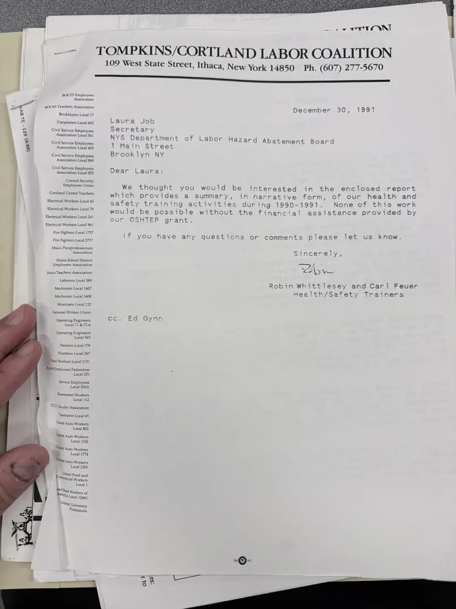

Letter, 1 page
Letter to the Hazard Abatement Board enclosing the 1990–91 report
December 30, 1991
Health and safety trainers Robin Whittlesey and Carl Feuer send Laura Job of the Department of Labor's Hazard Abatement Board a narrative report of the year's training, which they say would not have been possible without the OSHTEP grant.
A second photograph of this letter is not shown.
Download or cite this itemPages


(open zoom view)Read the page text (machine-read, mostly readable)
This text was generated automatically from the photograph and has not been corrected. The image is the authoritative record.
TOMPKINS/CORTLAND LABOR COALITION 109 West State Street, Ithaca, New York 14850 Ph. (607) 277-5670 BOCES Employees Association BOCES Teachers Association a Bricklayers Local 17 mn Carpenters Local 603 bet Civil Service Employees : > Association Local 561 @ Civil Service Employees 3 Association Local 605 Civil Service Employees Association Local 849 Civil Service Employees Association Local 855 Cornell Security Employees Union Cortland United Teachers Electrical Workers Local 43 ; Electrical Workers Local 79 Electrical Workers Local 241 Electrical Workers Local 961 Fire Fighters Local 1737 Fire Fighters Local 2737 Ithaca Paraprofessionals : Association Ithaca School District Employees Association i Ithaca Teachers Association Laborers Local 589 Machinists Local 1607 Machinists Local 1608 Musicians Local 132 National Writers Union Operating Engineers Local 71 & 71A Operating Engineers Local 545 Painters Local 178 Plumbers Local 267 Posial Workers Local 1151 Piblictmployees Federation Local 251 Service Employees Local 200A Sheetmetal Workers Local 112 TCCCFaculty Association Teamsters Local 65 hited Auto Workers Local 802 Utited Auto Workers Local 1326 Utited Auto Workers a Local 1774 Uhied Auto Workers Local 2300 ontited Food and Mercial Workers Local 1 ited g}, Amott! Workers of Mética Local 12460 ited University Tofessions December 30, 1991 Laura Job Secretary NYS Department of Labor Hazard Abatement Board 1 Main Street Brooklyn NY Dear Laura: We thought you would be interested in the enclosed report which provides a summary, in narrative form, of our health and safety training activities during 1990-1991. None of this work would be possible without the financial assistance provided by our OSHTEP grant. 1!f you have any questions or comments please let us know. Sincerely, “ZA di Robin Whittlesey and Car] Feuer Health/Safety Trainers ceo ee de Gy nn oy} 782)
See something wrong, or recognize a person or event? Send a correction. If you hold rights in this item or think it should not be public, write to the same address.